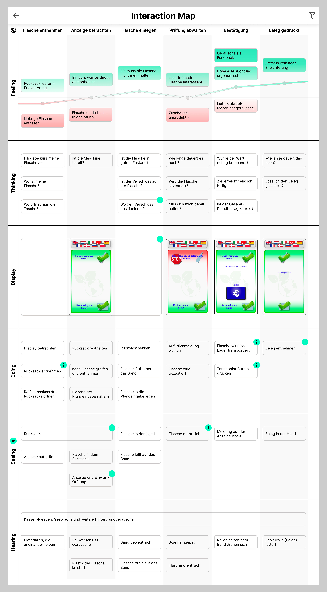

Spiel - Rock, Paper, Scissors, Spock, Lizard

Als Aufgabe galt es, ein Spiel mit der Logik von Schere, Stein, Papier zu programmieren. Ich habe HTML für den Inhalt und die Stuktur des Spiels verwendet. Mit CSS habe ich alle Elemente stilisiert. Javascript habe ich hauptsächlich für die Logik des Spiels benutzt. Am Ende habe ich auch Bonus-Features implementiert, wie zum Beispiel das Feuerwerk, das Spiel-Setup und die Tabelle der Ergebnisse.
Spiel-Setup
In diesem Popup kann der User Parameter einstellen, wie zum Beispiel die Farben und die Icons des Spielers bzw. des Computers. Bei jedem Parameter werden mithilfe von JavaScript mehrere Checks durchgeführt, zum Beispiel die beiden Farben dürfen nicht zu ähnlich sein.
Ergebnistabelle
Am Ende des Spiels kann man sich eine Ergebnistabelle anzeigen lassen. Hier werden die eingegebene Parameter und die Spieldauer eingeblendet. Außerdem sieht man hier die Ergebnisse jeder Runde. Es ist auch möglich, den Inhalt dieser Tabelle herunterzuladen.
Informationsgraphik - Bike Parts


Aufgabe war es, ein Informationssystem zu entwickeln, das aus mindestens 3 Informationsebenen besteht. Als Thema habe ich Fahrradkomponenten ausgewählt. In der ersten Informationsebene entscheidet man sich für die Art des Fahrrads, zum Beispiel „Fully“. In der zweiten bene wählt man die Komponente, zum Beispiel „Federgabel“. In der dritten Ebene sucht man das genaue Modell aus. In der vierten Ebene wird die Detailansicht gezeigt.
Prozess
Struktur des Informationssystems
Zu Beginn des Semesters habe ich die Struktur in Form einer Tabelle aufgebaut. Dafür habe ich anhand von einem Beispiel verschiedene Ebenen erstellt. In diesem Fall wählte ich „Mountainbike“ auf der ersten Ebene, „Federgabel“ auf der zweiten und „RockShox Lyrik Ultimate 2021“ auf der dritten. Anschließend sieht man in der Detailansicht die verschiedene Eigenschaften zum ausgewählten Modell.
Lo-Fi Skizzen

Am Anfang des Projektes habe ich viele verschiedene Skizzen mit der Hand erstellt. Dabei habe ich für jede Informationsebene mehrere Anordnungen ausprobiert. Im Anschluss habe ich mich entweder, für eine Variante entschieden oder eine Mischung aus den Varianten erstellt. Bei der Entscheidung war ein wichtiges Kriterium, dass jeder Nutzer durch das Informationssystem ohne Probleme und intuitiv navigieren kann.
Mid-Fi Skizzen
Bei dem Mid-Fi Design habe ich mich bereits für die Layouts der verschiedenen Ebenen entschieden. Außerdem habe ich begonnen, die Skizzen in Adobe Xd zu übertragen. Danach habe ich mich für eine Farbpalette mit orange entschieden, da diese Farbe für Spaß und Abenteuer steht. Hier habe ich klickbare Elemente eingearbeitet, mit denen der Nutzer über die vier Ebenen navigieren kann.
HI-FI / Finaler Prototyp
Homepage
In der Homepage sind die verschiedene Arten von Fahrräder in Kategorien und Subkategorien eingeteilt. Es gibt zum Beispiel innerhalb der Kategorie “Gelände” und eine Subkategorie “Fully”. Der User kann entweder auf das Photo oder auf dem Text klicken, um eine Art von Fahrrad auszuwählen.
Komponenten
Die Ansicht der Komponenten wurde so gestaltet, dass jede Komponente direkt mit einem link verbunden ist. Dadurch wurde erreicht, dass Menschen ohne Erfahrung mit Fahrradkomponenten, oder wenig Deutschkenntnisse, problemlos die gesuchte Komponente finden können.
Marke & Modell
In dieser Ansicht werden unterschiedliche Marken und Modelle der ausgewählten Komponente, passend zum Fahrradtyp, angezeigt.
Marke & Modell
In dieser Ansicht werden unterschiedliche Marken und Modelle der ausgewählten Komponente, passend zum Fahrradtyp, angezeigt.
Detailansicht
Die letzte Informationsebene enthaltet ein Aktionsbild auf voller Bildschirmbreite. Unterhalb des Bildes ist der Name der Komponente und ein Einführungstext eingeblendet. Zunächst gibt es eine Bewertung in einer Skala von 1 bis 5 Sternen. Danach gibt es eine Abteilung mit Spezifikationen zur Komponente. Zuletzt gibt es eine Abwechslung zwischen einen passenden Bild und etwas Fließtext zur Komponente.
Pfandflaschenautomat

Als Aufgabe galt es, eine Interaction Map zu erstellen. Das ausgewählte Thema war der Prozess einer Pfandflaschenrückgabe. Dazu haben wir zunächst eine Testperson gebeten, eine Pfandflasche zurückzugeben. Diesen Prozess haben wir im Detail analysiert. Das Ergebnis dieser Analyse haben wir dann in eine interaktive iPad-App umgesetzt. In dieser App kann man zwischen verschiedenen Menüs navigieren und Ebenen filtern.
Erkenntnis Button
Wichtig war es für uns, die Erkenntnisse aus unserer Analyse miteinzubauen, ohne Ästhetik und Überschaubarkeit zu verlieren. Dazu haben wir einigen Feldern Info-Buttons hinzugefügt. Klickt man auf einen Button, erscheint ein Pop-up mit der jeweiligen Erkenntnis.
Erkenntnis Pop-up
Das Erkenntnis Pop-up besteht aus einer Skizze und einer kurzen Erklärung. Die Pop-ups können vom User geöffnet und wieder geschlossen werden. Des Weiteren gibt es auf der Ebene „Display“ einen klickbaren Prototypen, der die Anzeige des Pfandautomaten simuliert.
Lo-Fi Skizze
Auf einem Whiteboard haben wir die verschiedenen Ebenen der Interaction Map festgehalten. Für die verschiedenen Ebenen haben wir unterschiedliche Post-It Farben benutzt. Die in der Feeling-Ebene mit den Farben pink und grün deutlich zu erkennen ist. Zu diesem Zeitpunkt hatte unsere Map vier Ebenen: Die Doing-, die Thinking-, die Feeling- und die Zeitebene. In der Thinking-Ebene haben wir alle möglichen Gedanken des Nutzers notiert, darunter auch fragen die man sich unterbewusst selbst stellt, wie z. B. „Wie weit lege ich jetzt die Flasche rein?“. In der Feeling-Ebene haben wir die positiven und negativen Gedanken notiert, die der Nutzer hat. Im Rewe haben wir eine Videoaufnahme vom Prozess der Pfandrückgabe gemacht, damit konnten wir die Zeiten für jeden Schritt messen und festhalten.
Mid-Fi
Im nächsten Schritt haben wir alle Post-Its auf ein Miro-Board übertragen. Außerdem haben wir die Ebenen in Kategorien und Subkategorien eingeteilt. Es entstand zum Beispiel eine technische Ebene mit mehreren Unterebenen. Die Maschine ist ein wichtiger Faktor beim Einlegen. Um diese zu verstehen haben wir sie in die Ebenen Logik, Display und Band aufgeteilt. Die Logik-Ebene der Maschine beschreibt, was die Maschine in jedem Schritt macht. In der Display-Ebene haben wir grafisch gearbeitet und für jeden Bildschirmzustand eine jeweilige Bilderschirmaufnahme hinzugefügt. Hier war auch deutlich zuerkennen, wann welcher Sensor einsetzt und wie sich dann Band in den einzelnen Zuständen verhält.
Hi-Fi / Finales Projekt
Startseite
In der finalen Version haben wir das Design der Startseite modern und schlicht gehalten. Statische Felder wie die Icon-Felder, die Schaubilder in der Ebene für den Kontext und auch die globalen Ebenen haben wir rechteckig gehalten. Die dynamischen Ebnen, welche gefiltert werden können, sind in abgerundeter Form.
Person und Kontext
Die Ebene für die Testperson und den Kontext ist nun scrollbar. Das Schaubild vom Rewe konnte dadurch vergrößert werden. Auch die Informationen haben mehr Freiraum bekommen und können leichter erfasst werden. Die Erkenntnisse zur Positionierung des Automaten haben wir in der App weggelassen, da sie nicht aktiv mit der Pfandrückgabe verknüpft sind. Das Schaubild vom Rewe wurde vergrößert, um die Position vom Pfandautomaten und den Rewe besser zu erkennen.
Interaction Map
Die Interaction Map hat sechs Ebenen. Neben den verschiedenen Ebenen der Testperson, gibt es noch eine technische Ebene für den Display. Diese Ebene enthält einen klickbaren Prototypen des Automaten, die dem Benutzter ermöglicht die Zustände selbst zu erleben. Wichtig waren uns, die Erkenntnisse aus unserer Analyse einzubauen, ohne die Ästhetik und Überschaubarkeit zu verlieren. Dazu haben wir den Feldern aus der Interaction Map Info-Buttons hinzugefügt. Klickt man auf einen Button, erscheint ein Pop-up mit der jeweiligen Erkenntnis. Das Erkenntnis Pop-up besteht aus einer Skizze und einer kurzen Erklärung. Die Pop-Ups können jederzeit vom User geöffnet und wieder geschlossen werden. Die Ebenen können in der Sidebar gefiltert werden. Dazu muss man auf das Filter-Icon oben rechts klicken und die jeweilige Ebene entfernen oder hinzufügen.